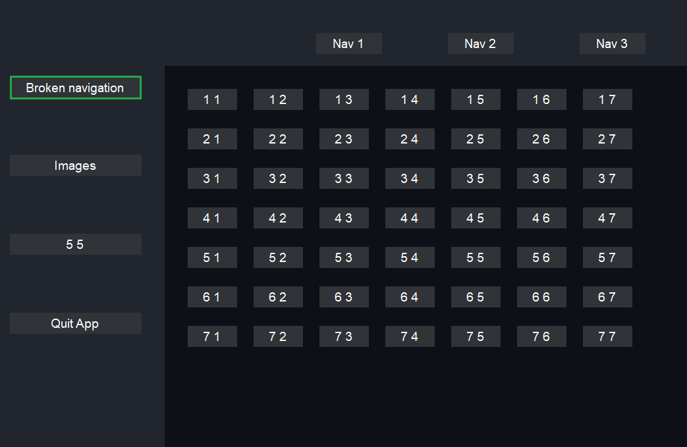
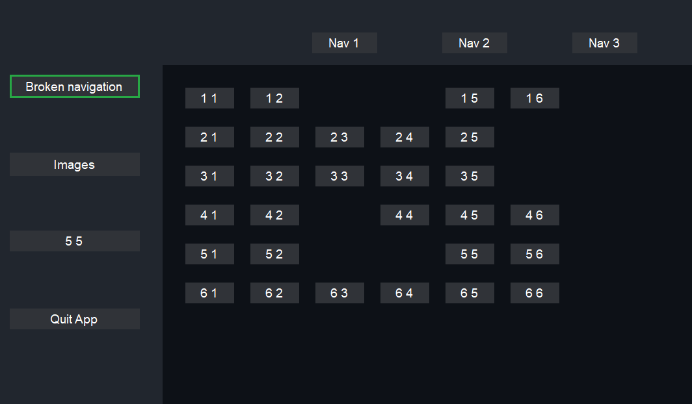

Tests¶
Test de l’interface graphique¶
Pour pouvoir tester mon interface graphique, j’ai créé un projet contenant des différentes vues pour pouvoir essayer le déplacement et le changement de vue.


Ce programme de test m’a permis de me rendre compte des différentes difficultés que j’ai pu avoir, ainsi que de pouvoir les corriger avant de passer à la partie développement de l’application.
Le but de ces tests étaient de ne pas avoir à me soucier de l’interface pendant que je devais développer la gestion des jeux et des émulateurs.
Test de Caiman¶
Test globaux¶
Pour pouvoir faire des tests, j’ai d’abord pensé à utiliser les tests de Visual Studio, malheureusement cela n’est pas vraiment applicable à Caiman. Alors, je n’ai donc testé que quelques classes de cette manière. Pour quand même essayer de trouver le plus de bogues possibles, j’ai demandé à plusieurs personnes de mon entourage d’essayer mon application pour me faire remonter les différents soucis qu’ils ont pu avoir.
Grâce aux différents retours, j’ai pu connaître un bon nombre de bogues liés à l’interface utilisable à la manettes et aux différents soucis d’ergonomie de Caiman. J’ai pu fournir à différents moments du développement des versions Alpha de Caiman, cela me permettait d’avoir des retours le plus régulièrement possible pour éviter d’avoir trop de contraintes à régler à la fin du développement.
Test synchronisation des sauvegardes¶
Pour tester la synchronisation des sauvegardes, j’ai créé un “protocole”. Ce protocole consiste à utiliser les sauvegardes du jeu “Metroid Prime” pour tester les sauvegardes des jeux de gamecube. Metroid Prime nous laisse créer un plusieurs fichiers de sauvegarde directement au lancement du jeu, je me sers donc de ces fichiers pour savoir si la sauvegarde est bien présente.
Pour tester les sauvegardes des jeux de Playstation 2, j’ai utilisé le jeu Dragon Quest: VIII, il a l’avantage de pouvoir créer un fichier de sauvegarde avec un nom spécifique. Donc, J’ai créé un fichier de sauvegarde avec mon prénom et un autre avec un nom complètement étrange. Si je ne trouve pas les sauvegardes quand je lance le jeu, alors je sais que la synchronisation n’a pas marché.